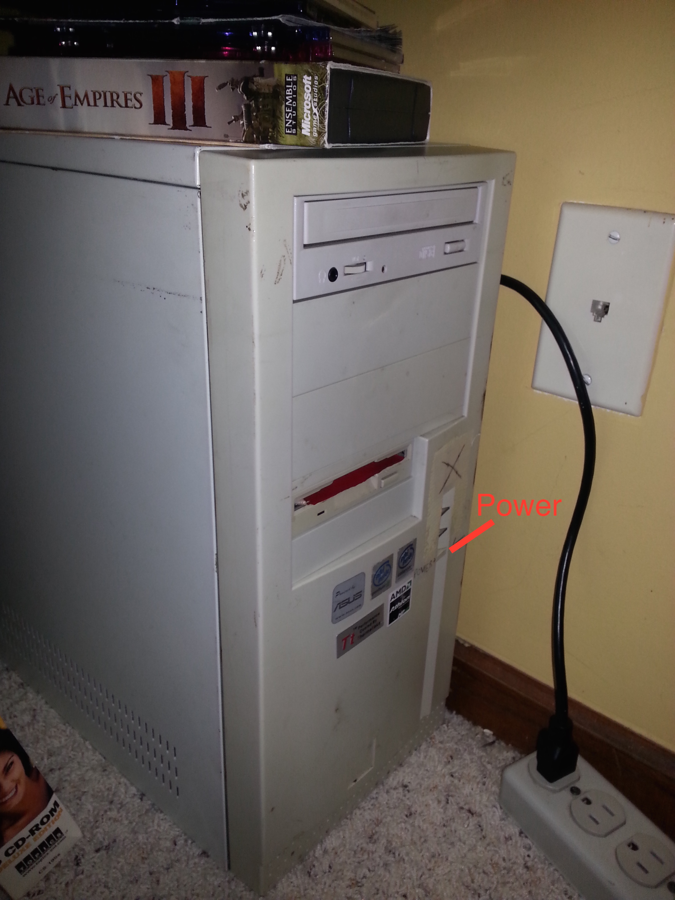
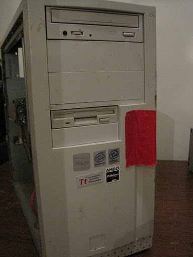
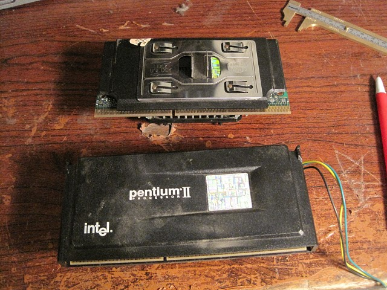

Computers/Sting
What It Is
Sting is my dual P2-350 128meg 256meg Asus
P2B-D
webserver/router/firewall/backup/you-name-it box.
It is named for the dagger which Bilbo and later Frodo used in The Hobbit and The Lord Of The Rings.
  
History
Sting has been my home network keystone since about 2004. It’s an old slow dog that never quits.
The Uptime Saga
- Back in college, I was excited when it hit uptimes of 90 and 53 days.
- I moved to Chicago in 2006 and made some money, and bought a UPS. That helped.
- After a year, living at my Hutchinson St apartment, the uptime grew. It prompted me to write a simple uptime tracking service for my computers, so I would have a proper record aside this page.
- Less than 12 hours before I moved out of that apartment, it crashed due to a disk controller fault at an uptime of 279 days.
- I moved to my Washtenaw Ave apartment in 2008, replaced the disk controller and disks with hand-me-down SATA disks, and left it on from December 2008 onwards.
- In May 2010, I moved from the ground floor to the top floor of the apartment on Washtenaw Ave. I planned and executed a successful move of Sting whilst on, with it’s UPS in hand!
- On November 1st 2010, the power supply in Sting finally gave way and it died in the middle of the night, at 687 days up. 94% of the way to two years. I replaced the power supply with a new gigantic one from Cooler Master.
- In 2011 I moved to China and left Sting with my friend Dan. Disks
from mc were consolidated into
sting, and mc found a dumpster.
- Unfortunately Sting was taken offline a few months later, and was in storage for 3 years.
- In December 2014 Sting was installed to the Weir house. Set up with an automatic shutdown when idle, and a monthly power-on schedule for the 13th at 07:00 UTC, sting will surface from time to time.
{kind=link}
{kind=link}
I may never beat 687 days with a real physical computer of my own.
Software
Sting runs GNU/Linux with a 2.6 kernel. It’s primary based on Slackware 10.2 and Dropline Gnome 2.14.
It has been massively upgraded over the years. 2.4 to 2.6 was a bit of a
challenge, and I’ve found my /usr/local to be extensive.
It runs lots of fun services like:
- Apache 2.0 web server with PHP 5
- SSH and OpenVPN servers
- Exim SMTP server
- Subversion server
- Internal services like a Netfilter firewall, VPN bridge and DHCP server, DNS server with custom records and an NTP server.
- Tunnels or proxies several services from mc for music sharing.
If sting is online, you can visit sting’s web interface at sting.vanstaveren.us which is proxied from sam over a vpn. If sting is unavailable (which is true most of the time) you will get a friendly error page.